The most powerful SUV coupé from Audi Sport: the RS Q8² with 441 kW (600 hp) of power. In addition to its RS performance, this impressive vehicle is capable of extraordinary transformations – both in its driving experience and in its design.


 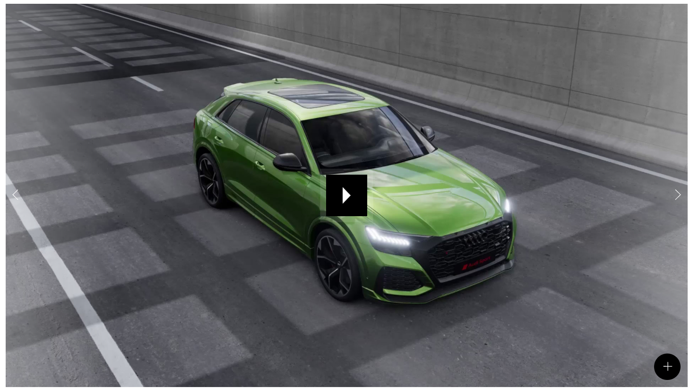
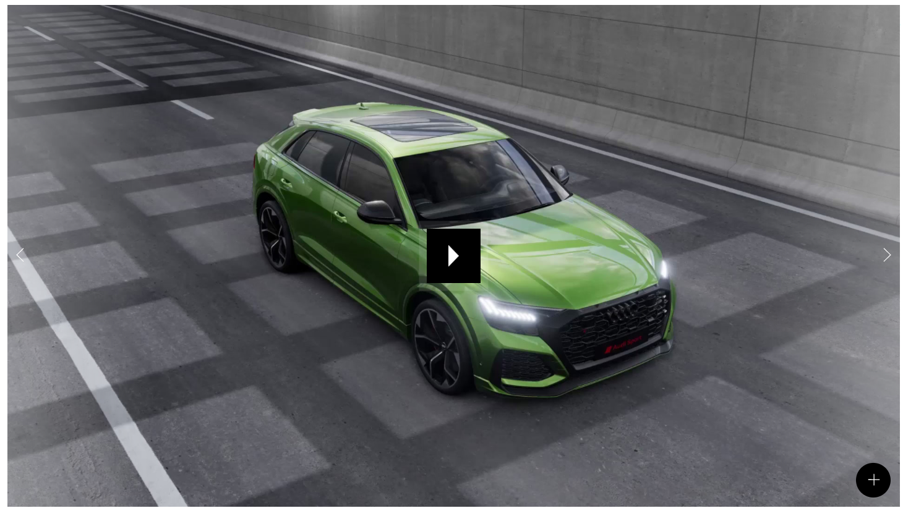
 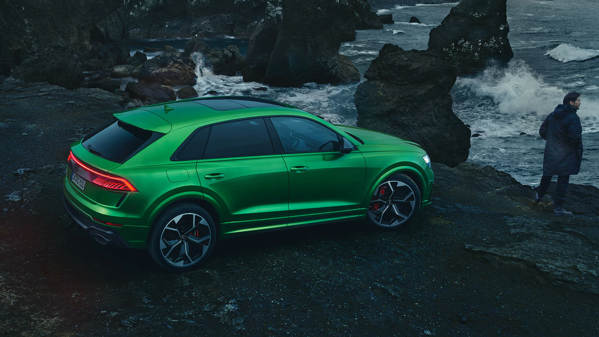
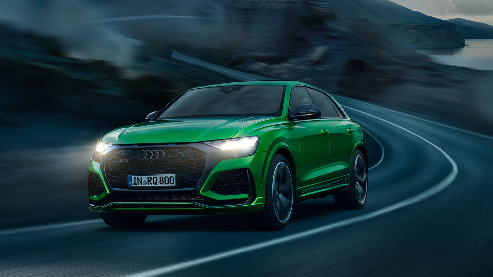
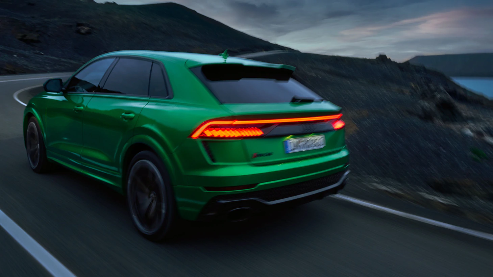
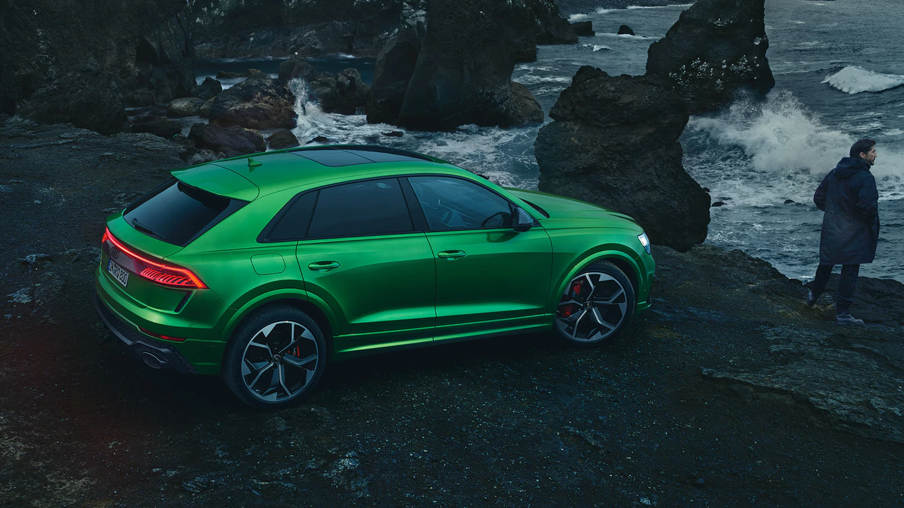
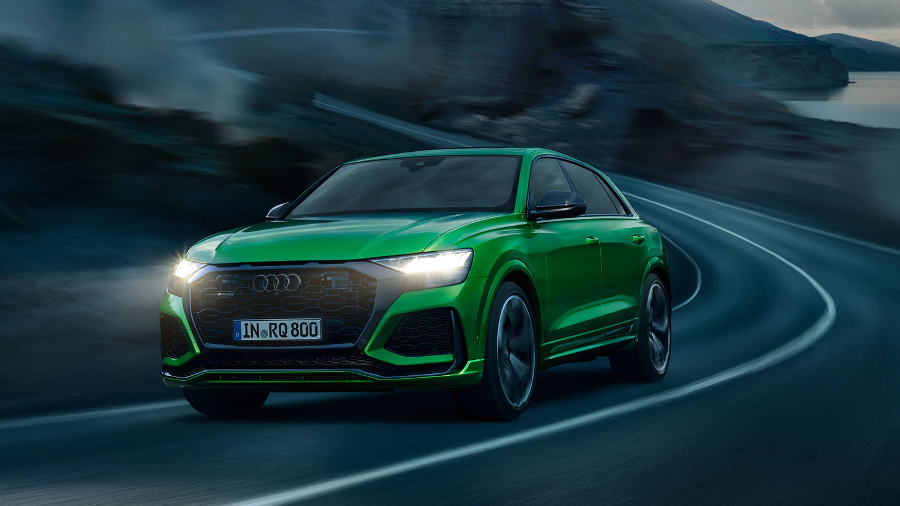
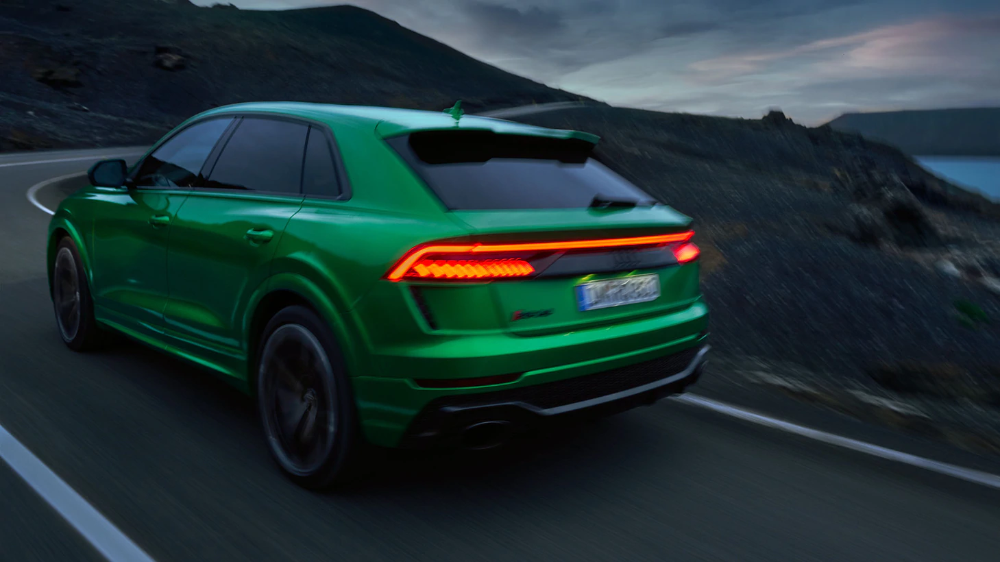

 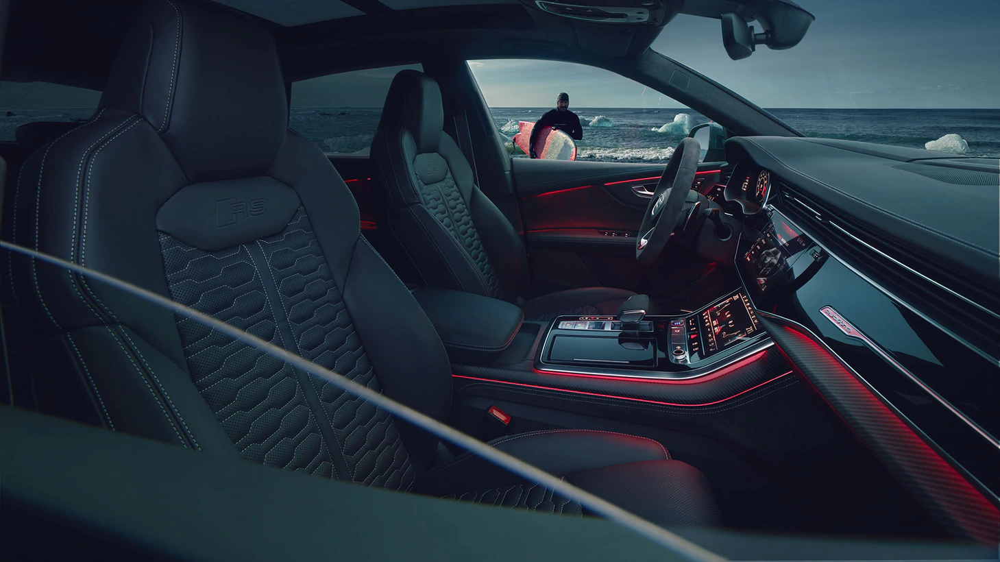
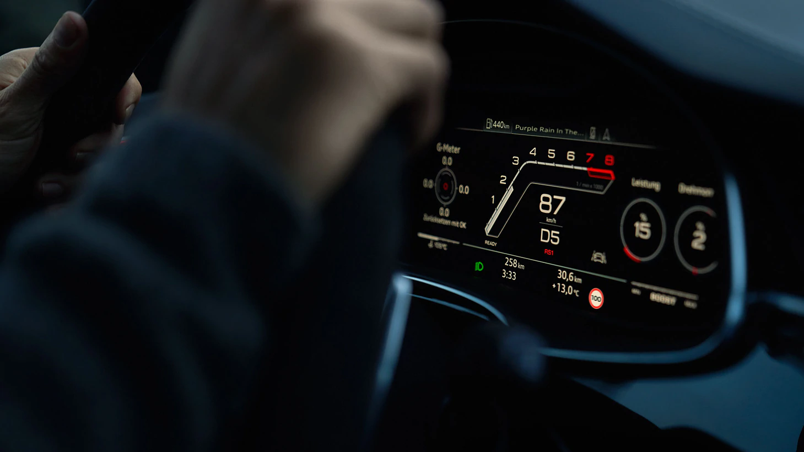
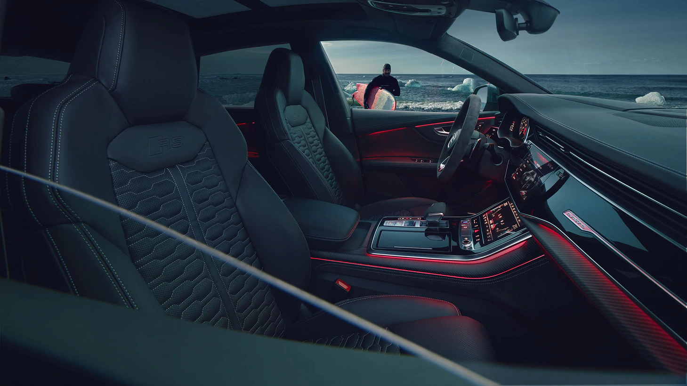
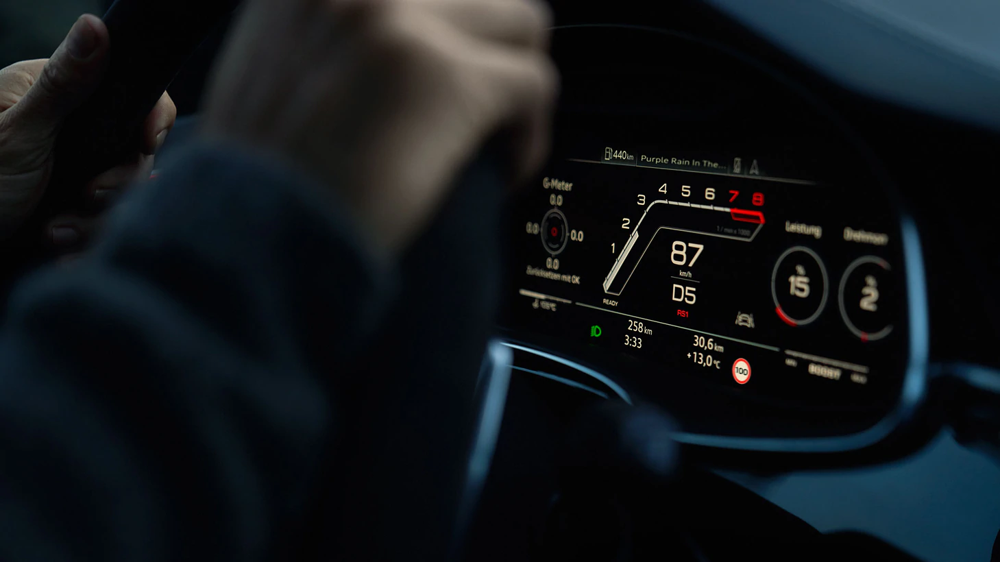


A characteristic feature at the front: the octagonal Singleframe with gloss black RS honeycomb grille.
*
All RS Q8 photos and videos in this website are for advertising only.


Follow your impulses: thanks to the unparalleled simplicity of the Audi RS Q8. The 4.0-litre V8 TFSI engine with 441 kW (600 hp) and maximum torque of 800 Nm combines with the quattro permanent all-wheel drive and the 8-speed automatic tiptronic to deliver pure dynamism. It will catapult you from 0 to 100 km/h in 3.8 seconds. The mild-hybrid system and cylinder on demand technology, which deactivates four cylinders at part load with low and medium engine speeds, can help save fuel.


The Audi RSQ8 offers you quattro permanent all-wheel drive with adaptive air suspension sport with characteristic RS tuning and the all-wheel steering for agile responsiveness and superb handling stability add that extra touch. Simply click the RS mode button on the steering wheel to modify the vehicle characteristics intuitively with Audi drive select.
RS-specific elements, such as the diffuser insert in gloss black with horizontal bar in carbon, hallmark RS oval tailpipes and the RS roof edge spoiler, underline the performance of the Audi RS Q8². The extended wheel arches and visibly all-round RS sill in body colour underscore the powerful stance of the Audi RS Q8¹. The sporty, dynamic design of the RS bumper with radiator protective grille in honeycomb structure and the large air inlets in gloss black add impressive highlights to the front view, as do the front spoiler and the Singleframe mask in carbon.
The sleek instrument panel and the strong horizontal body line convey a generous sense of spaciousness. The broad, symmetrically styled centre console is a key design element, framed for example in matt carbon twill. The RS sport seats in a black Valcona leather with honeycomb pattern and RS embossing offer excellent lateral support, even in challenging driving conditions. Right down to the smallest detail, grey or red contrasting stitching make for an even sportier ambience.
The interior of the Audi RS Q8² is equipped with a wide range of digital technologies that assist you in various ways on every journey. The RS-specific displays in the Audi virtual cockpit will give you the information about torque, performance, acceleration, lap times and G-forces as you want it.

The Audi RS Q8² is open to many possibilities. Alongside its impressive performance, it also offers excellent everyday usability. And with the seats folded down, it offers even more: this increases its storage space to up to 1,755 litres. The three-seater rear seat bench can be moved fore and aft as standard.

1
eec-global-disclaimer.
2
Fuel consumption combined¹: 12.1 l/100 km; CO₂ emissions combined¹: 277–276 g/km.
3
Electronically regulated.